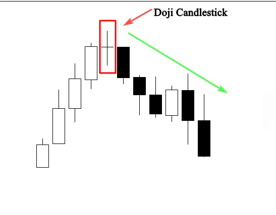
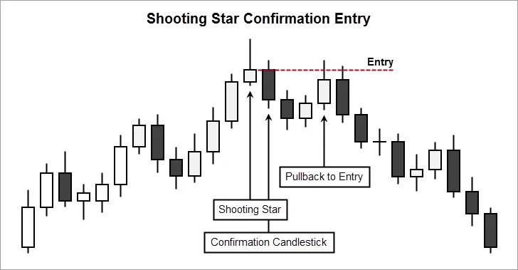

Candlestick patterns
Candlestick patterns are one of the most powerful trading concepts,
they are simple, easy to identify, and very profitable setups, a research
has confirmed that candlestick patterns have a high predictive value
and can produce positive results.
I personally trade candlestick pattern for more than 20 years; i can’t
really switch to another method, because i tried thousands of
strategies and trading methods with no results.
I’m not going to introduce you to a holy grail, this trading system
works, but be prepared to lose some trades, losing is a part of this
game, if you are looking for a 100% wining system, i highly recommend
you to stop trading and go look for another business.
Candlestick patterns are the language of the market, imagine you are
living in a foreign country, and you don’t speak the language.
How could you live if you can’t even say a word? It’s tough right???The
same thing when it comes to trading.
If you know how to read candlestick patterns the right way, you will be
able to understand what these patterns tell you about the market
dynamics and the trader’s behavior.
This skill will help you better enter and exit the market in the right
time.
In other words, this will help you act differently in the market and
make money following the smart guy’s footprints.
The candlestick patterns that i’m going to show you here are the most
important patterns that you will find in the market, in this chapter, i’m
not going to show you how to trade them, because this will be
explained in details in the next chapters.
What i want you to do is to focus on the anatomy of the pattern and
the psychology behind its formation, because this will help you get the
skill of identifying easily any pattern you find in the market and
understand what it tells you to do next.
If you can get this skill, you will be ready to understand and master the
trading strategies and tactics that i’m going to teach you in the next
chapters.
The engulfing bar candlestick pattern
The Engulfing bar as it states in its title is formed when it fully engulfs
the previous candle. The engulfing bar can engulf more than one
previous candle, but to be considered an engulfing bar, at least one
candle must be fully consumed.
The bearish engulfing is one of the most important candlestick
patterns.
This candlestick pattern consists of two bodies:
The first body is smaller than the second one, in other words, the
second body engulfs the previous one. See the illustration below:
This is how a bearish engulfing bar pattern looks like on your charts,
this candlestick pattern gives us valuable information about bulls and
bears in the market.
In case of a bearish engulfing bar, this pattern tells us that sellers are
in control of the market.
When this pattern occurs at the end of an uptrend, this indicates that
buyers are engulfed by sellers which signals a trend reversal.
See the example below:
As you can see when this price action pattern occurs in an uptrend, we
can anticipate a trend reversal because buyers are not still in control
of the market, and sellers are trying to push the market to go down.
You can’t trade any bearish candlestick pattern you find on your chart;
you will need other technical tools to confirm your entries.
We will talk about this in details in the next chapters. Right now, i just
want you to open your charts and try to identify all bearish candlestick
patterns that you find.
The bullish engulfing bar pattern
The bullish engulfing bar consists of two candlesticks, the first one is
the small body, and the second is the engulfing candle,
see the illustration:
The bullish engulfing bar pattern tells us that the market is no longer
under control of sellers, and buyers will take control of the market.
When a bullish engulfing candle forms in the context of an uptrend, it
indicates a continuation signal.
When a bullish engulfing candle forms at the end of a downtrend, the
reversal is much more powerful as it represents a capitulation bottom.
See the example below:
The example above shows us clearly how the market changes direction
after the formation of a bullish engulfing bar pattern.
The smaller body that represents the selling power was covered by the
second body that represents the buying power.
The color of the bodies is not important. What’s important is that the
smaller one is totally engulfed by the second candlestick.
Don’t try to trade the market using this price action setup alone,
because you will need other factors of confluence to decide whether
the pattern is worth trading or not, i will talk about this in the next
chapters.
What i want you to do now is to get the skill of identifying bearish and
bullish engulfing bar on your charts. This is the most important step
for the moment.
The Doji Candlestick pattern
Doji is one of the most important Japanese candlestick patterns, when
this candlestick forms, it tells us that the market opens and closes at
the same price which means that there is equality and indecision
between buyers and sellers, there is no one in control of the market.
See the example below:
As you can see the opening price is the same as the closing price, this
signal means that the market didn’t decide which direction will take.
When this pattern occurs in an uptrend or a downtrend, it indicates
that the market is likely to reverse.
See another example below to learn more:

The chart above shows how the market changed direction after the
formation of the Doji candlestick.
The market was trending up, that means that buyers were in control
of the market.
The formation of the Doji candlestick indicates that buyers are unable
to keep price higher, and sellers push prices back to the opening price.
This is a clear indication that a trend reversal is likely to happen.
Remember always that a Doji indicates equality and indecision in the
market, you will often find it during periods of resting after big moves
higher or lower.
When it is found at the bottom or at the top of a trend, it is considered
as a sign that a prior trend is losing its strengths.
So if you are already riding that trend it’s time to take profits, it can
also be used as an entry signal if it is combined with other technical
analysis
The Dragonfly Doji pattern
The Dragonfly Doji is a bullish candlestick pattern which is formed
when the open high and close are the same or about the same price.
What characterizes the dragonfly Doji is the long lower tail that shows
the resistance of buyers and their attempt to push the market up.
See the example below:
The illustration above shows us a prefect dragonfly Doji. The long
lower tail suggests that the forces of supply and demand are nearing a
balance and that the direction of the trend may be nearing a major
turning point.
See the example below that indicates a bullish reversal signal created
by a dragonfly Doji.
In the chart above, the market was testing the previous support level
that caused a strong rejection from this area.
The formation of the dragonfly Doji with the long lower tail shows us
that there is a high buying pressure in the area.
If you can identify this candlestick pattern on your chart, it will help
you visually see when support and demand are located.
When it occurs in a downtrend, it is interpreted as a bullish reversal
signal.
But as i always say, you can’t trade candlestick pattern alone, you will
need other indicators and tools to determine high probability
dragonfly Doji signals in the market.
The Gravestone Doji
The Gravestone Doji is the bearish version of the dragonfly Doji, it is
formed when the open and close are the same or about the same
price.
What differentiates the Gravestone Doji from the dragonfly Doji is the
long upper tail.
The formation of the long upper tail is an indication that the market is
testing a powerful supply or resistance area.
See the example below:
The image above illustrates a perfect gravestone Doji. This pattern
indicates that while buyers were able to push prices well above the
open.
Later in the day sellers overwhelmed the market pushing the price
back down.
This is interpreted as a sign that bulls are losing their momentum and
the market is ready for a reversal.
See another illustration below:
The chart above shows a gravestone Doji at the top of an uptrend,
after a period of strong bullish activity.
The formation of this candlestick pattern indicates that buyers are no
longer in control of the market. For this pattern to be reliable,
it must occur near a resistance level.
As a trader, you will need additional information about the placement
and context of the gravestone Doji to interpret the signal effectively.
This is what i will teach you in the next chapters.
The morning star
The morning star pattern is considered as a bullish reversal pattern, it
often occurs at the bottom of a downtrend and it consists of three
candlesticks:
-The first candlestick is bearish which indicates that sellers are still in
charge of the market.
-The second candle is a small one which represents that sellers are in
control, but they don’t push the market much lower and this candle
can be bullish or bearish.
-The third candle is a bullish candlestick that gapped up on the open
and closed above the midpoint of the body of the first day, this
candlestick holds a significant trend reversal signal.
The morning star pattern shows us how buyers took control of the
market from sellers, when this pattern occurs at the bottom of
downtrend near a support level, it is interpreted as a powerful trend
reversal signal.
See the illustration below:
The chart above helps us identify the morning star pattern and how it
is significant when it is formed at the bottom of a downtrend.
As you can see the pattern occurred at an obvious bearish trend.
The first candle confirmed the seller’s domination, and the second one
produces indecision in the market, the second candle could be a Doji,
or any other candle.
But here, the Doji candle indicated that sellers are struggling to push
the market lower. The third bullish candle indicates that buyers took
control from sellers, and the market is likely to reverse.
This is how professional traders analyze the market based on
candlestick patterns, and this is how you will analyze financial markets
if you can master the anatomy of candlestick patterns and the
psychology behind their formations.
The evening star pattern
The evening star pattern is considered as a bearish reversal pattern
that usually occurs at the top of an uptrend.
The pattern consists of three candlesticks:
-The first candle is a bullish candle
-The second candle is a small candlestick, it can be bullish or bearish or
it can be a Doji or any other candlestick.
-The third candle is a large bearish candle. In general, the evening star
pattern is the bearish version of the morning star pattern.
See the example below:
The first part of an evening star is a bullish candle; this means that bulls
are still pushing the market higher.
Right now, everything is going all right. The formation of the smaller
body shows that buyers are still in control but they are not as powerful
as they were.
The third bearish candle indicates that the buyer’s domination is over,
and a possible bearish trend reversal is likely to happen.
See another chart that illustrates how the evening star could represent
a significant trend reversal signal.
As you can see the market was trending up, the first candle in the
pattern indicates a long move up.
The second one is a short candle indicating price consolidation and
indecision.
In other words, the trend that created the first long bullish
candlestick is losing momentum. The final candlestick gaping lower
than the previous candlestick indicating a confirmation of the
reversal and the beginning of a new trend down.
The Hammer (pin bar)
The Hammer candlestick is created when the open high and close are
roughly the same price; it is also characterized by a long lower shadow
that indicates a bullish rejection from buyers and their intention to
push the market higher.
See the illustration below to see how it looks like:
The hammer is a reversal candlestick pattern when it occurs at the
bottom of a downtrend.
This candle forms when sellers push the market lower after the open,
but they get rejected by buyers so the market closes higher than the
lowest price.
See another example below:
As you can see the market was trending down, the formation of the
hammer (pin bar) was a significant reversal pattern.
The long shadow represents the high buying pressure from this point.
Sellers was trying to push the market lower, but in that level the buying
power was more powerful than the selling pressure which results in a
trend reversal.
The most important to understand is the psychology behind the
formation of this pattern, if you can understand how and why it was
created, you will be able to predict the market direction with high
accuracy.
We will talk about how to trade this pattern and how to filter this signal
in the next chapters.
The shooting star (bearish pin bar)
The shooting formation is formed when the open low, and close are
roughly the same price, this candle is characterized by a small body
and a long upper shadow. It is the bearish version of the hammer.
Professional technicians say that the shadow should be twice the
length of the real body.
See the example below:
 The illustration above shows us a perfect shooting star with a real small
body and an upper long shadow, when this pattern occurs in an
uptrend; it indicates a bearish reversal signal.
The illustration above shows us a perfect shooting star with a real small
body and an upper long shadow, when this pattern occurs in an
uptrend; it indicates a bearish reversal signal.
The psychology behind the formation of this pattern is that buyers try
to push the market higher, but they got rejected by a selling pressure.
When this candlestick forms near a resistance level. It should be taken
as a high probability setup.
See another example below:

The chart above shows a nice shooting star at the end of an uptrend.
The formation of this pattern indicates the end of the uptrend move,
and the beginning of a new downtrend.
This candlestick pattern can be used with support and resistance,
supply and demand areas, and with technical indicators.
The shooting star is very easy to identify, and it is very profitable, it is
one of the most powerful signals that i use to enter the market.
In the next chapters, i will talk about it in details, and i will show you
step by step how to make money trading this price action pattern.
The Harami Pattern (the inside bar)
The Harami pattern (pregnant in Japanese) is considered as a reversal
and continuation pattern, and it consists of two candlesticks:
The first candle is the large candle, it is called the mother candle,
followed by a smaller candle which is called the baby.
For the Harami pattern to be valid, the second candle should close
outside the previous one.
This candlestick is considered as a bearish reversal signal when it
occurs at the top of an uptrend, and it is a bullish signal when it occurs
at the bottom of a downtrend.
See an example below:
As you see the smaller body is totally covered by the previous mother
candle, don’t bother yourself with the colors, the most important is
that the smaller body closes inside of the first bigger candle.
The Harami candle tells us that the market is in an indecision period.
In other words, the market is consolidating.
So, buyers and sellers don’t know what to do, and there is no one in
control of the market.
When this candlestick pattern happens during an uptrend or a
downtrend, it is interpreted as a continuation pattern which gives a
good opportunity to join the trend.
And if it is occurred at the top of an uptrend or at the bottom of a
downtrend, it is considered as a trend reversal signal.
Look at another example below:
In the chart above, you can see how the trend direction changes after
the Harami pattern formation, the first bullish harami pattern
occurred at the bottom of a downtrend, sellers were pushing the
market lower, suddenly price starts consolidating, and this indicates
that the selling power is no longer in control of the market.
The bearish Harami is the opposite of the bullish, this one occurred at
the top of an uptrend indicating that buyer’s domination is over and
the beginning of a downtrend is possible.
When this pattern is created during an uptrend or a downtrend, it
indicates a continuation signal with the direction of the market.
We will study in details how to trade this pattern either as a reversal
pattern or as a continuation pattern in the next chapters.
The Tweezers tops and bottoms
The tweezers top formation is considered as a bearish reversal pattern
seen at the top of an uptrend, and the tweezers bottom formation is
interpreted as a bullish reversal pattern seen at the bottom of a
downtrend.
See the example below:
The tweezers top formation consists of two candlesticks:
The first one is a bullish candlestick followed by a bearish candlestick.
And the tweezers bottom formation consists of two candlesticks as
well.
The first candle is bearish followed by a bullish candlestick.
So we can say that the tweezers bottom is the bullish version of the
tweezers top.
The tweezers top occurs during an uptrend when buyers push the price
higher, this gave us the impression that the market is still going up, but
sellers surprised buyers by pushing the market lower and close down
the open of the bullish candle.
This price action pattern indicates a bullish trend reversal and we can
trade it if we can combine this signal with other technical tools.
The tweezers bottom happens during a downtrend, when sellers push
the market lower, we feel that everything is going all right, but the next
session price closes above or roughly at the same price of the first
bearish candle which indicates that buyers are coming to reverse the
market direction.
If this price action happens near a support level, it indicates that a
bearish reversal is likely to happen.
The chart above shows us a tweezers bottom that occurs in a
downtrend, the bears pushed the market downward on the first
session; however, the second session opened where prices closed on
the first session and went straight up indicating a reversal buy signal
that you can trade if you have other elements that confirm your buying
decision.
Don’t focus on the name of a candlestick, try to understand the
psychology behind its formation, this is the most important.
Because if you can understand why it was formed, you will understand
what happened in the market, and you can easily predict the future
movement of price.